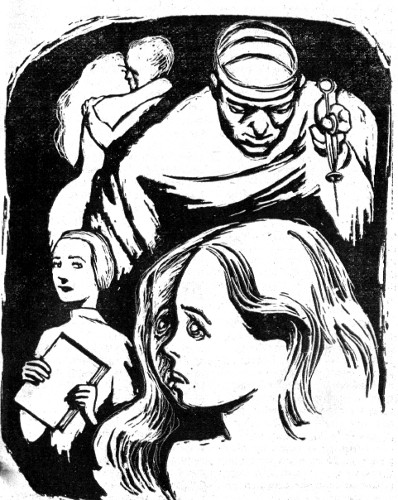

e(njoyable)Textbooks

Beyond Bedlam

Sample Book

Sample Book

Notes


The opening afternoon class for Mary Walden's ego-shift was almost over, and Mary was practically certain the teacher would not call on her to recite her assignment, when Carl Blair got it into his mind to try to pass her a dirty note. Mary knew it would be a screamingly funny Ego-Shifting Room limerick and was about to reach for the note when Mrs. Harris's voice crackled through the room.
"Carl Blair! I believe you have an important message. Surely you will want the whole class to hear it. Come forward, please."
As he made his way before the class, the boy's blush-covered freckles reappeared against his growing pallor. Haltingly and in an agonized monotone, he recited from the note:
The class didn't dare laugh. Their eyes burned down at their laps in shame. Mary managed to throw Carl Blair a compassionate glance as he returned to his seat, but she instantly regretted ever having been kind to him.
"Mary Walden, you seemed uncommonly interested in reading something just now. Perhaps you wouldn't mind reading your assignment to the class."
There it was, and just when the class was almost over. Mary could have scratched Carl Blair. She clutched her paper grimly and strode to the front.
"Today's assignment in Pharmacy History is, 'Schizophrenia since the Ancient Pre-pharmacy days.'" Mary took enough breath to get into the first paragraph.
"Schizophrenia is where two or more personalities live in the same brain. The ancients of the 20th Century actually looked upon schizophrenia as a disease! Everyone felt
it was very shameful to have a schizophrenic person in the family, and, since children lived right with the same parents who had borne them, it was very bad. If you were a schizophrenic child in the 20th Century, you would be locked up behind bars and people would call you—"
Mary blushed and stumbled over the daring word—"crazy." "The ancients locked up strong ego groups right along with weak ones. Today we would lock up those ancient people."
The class agreed silently.
"But there were more and more schizophrenics to lock up. By 1950 the prisons and hospitals were so full of schizophrenic people that the ancients did not have room left to lock up any more. They were beginning to see that soon everyone would be schizophrenic.
"Of course, in the 20th Century, the schizophrenic people were almost as helpless
and 'crazy' as the ancient Modern men. Naturally they did not fight wars and lead the silly life of the Moderns, but without proper drugs they couldn't control their Ego-shiftability. The personalities in a brain would always be fighting each other. One personality would cut the body or hurt it or make it filthy, so that when the other personality took over the body, it would have to suffer. No, the schizophrenic people of the 20th Century were almost as 'crazy' as the ancient Moderns.
"But then the drugs were invented one by one and the schizophrenic people of the 20th Century were freed of their troubles. With the drugs the personalities of each body were able to live side by side in harmony at last. It turned out that many schizophrenic people, called overendowed personalities, simply had so many talents and viewpoints that it took two or more personalities to handle everything.
"The drugs worked so well that the ancients had to let millions of schizophrenic people out
from behind the bars of 'crazy' houses. That was the Great Emancipation of the 1990s. From then on, schizophrenic people had trouble only when they criminally didn't take their drugs. Usually, there are two egos in a schizophrenic person—the hyperalter, or prime ego, and the hypoalter, the alternate ego. There often were more than two, but the Medicorps makes us take our drugs so that won't happen to us.
"At last someone realized that if everyone took the new drugs, the great wars would stop. At the World Congress of 1997, laws were passed to make everyone take the drugs. There were many fights over this because some people wanted to stay Modern and fight wars. The Medicorps was organized and told to kill anyone who wouldn't take their drugs as prescribed. Now the laws are enforced and everybody takes the drugs and the hyperalter and hypoalter are each allowed to have the body for an ego-shift of five days...."
Mary Walden faltered. She looked up at the faces of her classmates, started to turn to Mrs. Harris and felt the sickness growing in her head. Six great waves of crescendo silence washed through her. The silence swept away everything but the terror, which stood in her frail body like a shrieking rock.
Mary heard Mrs. Harris hurry to the shining dispensary along one wall of the classroom and return to stand before her with a swab of antiseptic and a disposable syringe.
Mrs. Harris helped her to a chair. A few minutes after the expert injection, Mary's mind struggled back from its core of silence.
"Mary, dear, I'm sorry. I haven't been watching you closely enough."
"Oh, Mrs. Harris...." Mary's chin trembled. "I hope it never happens again."
"Now, child, we all have to go through these things when we're young. You're just a little
slower than the others in acclimatizing to the drugs. You'll be fourteen soon and the medicop assures me you'll be over this sort of thing just as the others are."
Mrs. Harris dismissed the class and when they had all filed from the room, she turned to Mary.
"I think, dear, we should visit the clinic together, don't you?"
"Yes, Mrs. Harris." Mary was not frightened now. She was just ashamed to be such a difficult child and so slow to acclimatize to the drugs.
As she and the teacher walked down the long corridor to the clinic, Mary made up her mind to tell the medicop what she thought was wrong. It was not herself. It was her hypoalter, that nasty little Susan Shorrs. Sometimes, when Susan had the body, the things Susan was doing and thinking came to Mary like what the ancients had called dreams, and Mary had
never liked this secondary ego whom she could never really know.
Mrs. Harris waited while Mary went into the clinic.
Mary was glad to find Captain Thiel, the nice medicop, on duty. But she was silent while the X-rays were being taken, and, of course, while he got the blood samples, she concentrated on being brave.
Later, while Captain Thiel looked in her eyes with the bright little light, Mary said calmly, "Do you know my hypoalter, Susan Shorrs?"
The medicop drew back and made some notes on a pad before answering. "Why, yes. She's in here quite often too."
"Does she look like me?"
"Not much. She's a very nice little girl...." He hesitated, visibly fumbling.
Mary blurted, "Tell me truly, what's she like?"
Captain Thiel gave her his nice smile. "Well, I'll tell you a secret if you keep it to yourself."
"Oh, I promise."
He leaned over and whispered in her ear and she liked the clean odor of him. "She's not nearly as pretty as you are."
Mary wanted very badly to put her arms around him and hug him. Instead, wondering if Mrs. Harris, waiting outside, had heard, she drew back self-consciously and said, "Susan is the cause of all this trouble, the nasty little thing."
"Oh now!" the medicop exclaimed. "I don't think so, Mary. She's in trouble, too, you know."
"She still eats sauerkraut." Mary was defiant.
"But what's wrong with that?"
"You told her not to last year because it makes me sick on my shift. But it agrees in buckets with a little pig like her."
The medicop took this seriously. He made a note on the pad. "Mary, you should have complained sooner."
"Do you think my father might not like me because Susan Shorrs is my hypoalter?" she asked abruptly.
"I hardly think so, Mary. After all, he doesn't even know her. He's never on her Ego shift."
"A little bit," Mary said, and was immediately frightened.
Captain Thiel glanced at her sharply. "What do you mean by that, child?"
"Oh, nothing," Mary said hastily. "I just thought maybe he was."
"Let me see your pharmacase," he said rather
severely.
Mary slipped the pharmacase off the belt at her waist and handed it to him. Captain Thiel extracted the prescription card from the back and threw it away. He slipped a new card in the taping machine on his desk and punched out a new prescription, which he reinserted in the pharmacase. In the space on the front, he wrote directions for Mary to take the drugs numbered from left to right.
Mary watched his serious face and remembered that he had complimented her about being prettier than Susan. "Captain Thiel, is your hypoalter as handsome as you are?"
The young medicop emptied the remains of the old prescription from the pharmacase and took it to the dispensary in the corner, where he slid it into the filling slot. He seemed unmoved by her question and simply muttered, "Much handsomer."
The machine automatically filled the case from the punched card on its back and he returned it to Mary. "Are you taking your drugs exactly as prescribed? You know there are very strict laws about that, and as soon as you are fourteen, you will be held to them."
Mary nodded solemnly. Great straitjackets, who didn't know there were laws about taking your drugs?
There was a long pause and Mary knew she was supposed to leave. She wanted, though, to stay with Captain Thiel and talk with him. She wondered how it would be if he were appointed her father.
Mary was not hurt that her shy compliment to him had gone unnoticed. She had only wanted something to talk about. Finally she said desperately, "Captain Thiel, how is it possible for a body to change as much from one Ego shift to another as it does between Susan and me?"
"There isn't all the change you imagine," he said. "Have you had your first physiology?"
"Yes. I was very good...." Mary saw from his smile that her inadvertent little conceit had trapped her.
"Then, Miss Mary Walden, how do you think it is possible?"
Why did teachers and medicops have to be this way? When all you wanted was to have them talk to you, they turned everything around and made you think.
She quoted unhappily from her schoolbook, "The main things in an ego shift are the two vegetative nervous systems that translate the conditions of either personality to the blood and other organs right from the brain. The vegetative nervous systems change the rate at which the liver burns or stores sugar and the rate at which the kidneys excrete...."
Through the closed door to the other room,
Mrs. Harris's voice raised at the visiophone said distinctly, "But, Mr. Walden...."
"Reabsorb," corrected Captain Thiel.
"What?" She didn't know what to listen to—the medicop or the distant voice of Mrs. Harris.
"It's better to think of the kidneys as reabsorbing salts and nutrients from the filtrated blood."
"Oh."
"But, Mr. Walden, we can overdo a good thing. The proper amount of neglect is definitely required for full development of some personality types and Mary certainly is one of those...."
"What about the pituitary gland that's attached to the brain and controls all the other glands during the shift of egos?" pressed Captain Thiel distractingly.
"But, Mr. Walden, too much neglect at this critical point may cause another personality to split off and we can't have that. Adequate personalities are congenital. A new one now would only rob the present personalities. You are the appointed parent of this child and the Board of Education will enforce your compliance with our diagnosis...."
Mary's mind leaped to a page in one of her childhood storybooks. It was an illustration of a little girl resting beneath a great tree that overhung a brook. There were friendly little wild animals about. Mary could see the page clearly and she thought about it very hard instead of crying.
"Aren't you interested any more, Mary?" Captain Thiel was looking at her strangely.
The agitation in her voice was a surprise. "I have to get home. I have a lot of things to do."
Outside, when Mrs. Harris seemed suddenly to
realize that something was wrong, and delicately probed to find out whether her angry voice had been overheard, Mary said calmly and as if it didn't matter, "Was my father home when you called him before?"
"Why—yes, Mary. But you mustn't pay any attention to conversations like that, darling."
You can't force him to like me, she thought to herself, and she was angry with Mrs. Harris because now her father would only dislike her more.
Neither her father nor her mother was home when Mary walked into the evening-darkened apartment. It was the first day of the family shift, and on that day, for many periods now, they had not been home until late.
Mary walked through the empty rooms, turning on lights. She passed up the electrically heated dinner her father had set out for her. Presently she found herself at the storage room door. She opened it slowly.
After hesitating a while she went in and began an exhausting search for the old storybook with the picture in it.
Finally she knew she could not find it. She stood in the middle of the junk-filled room and began to cry.

1